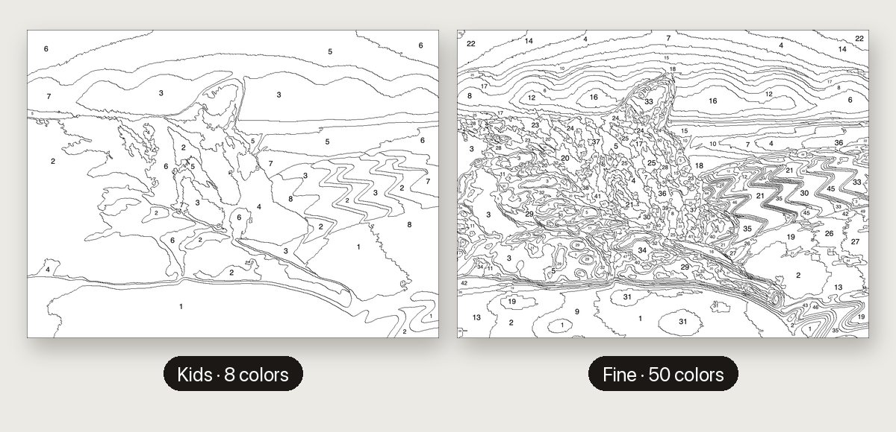
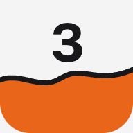
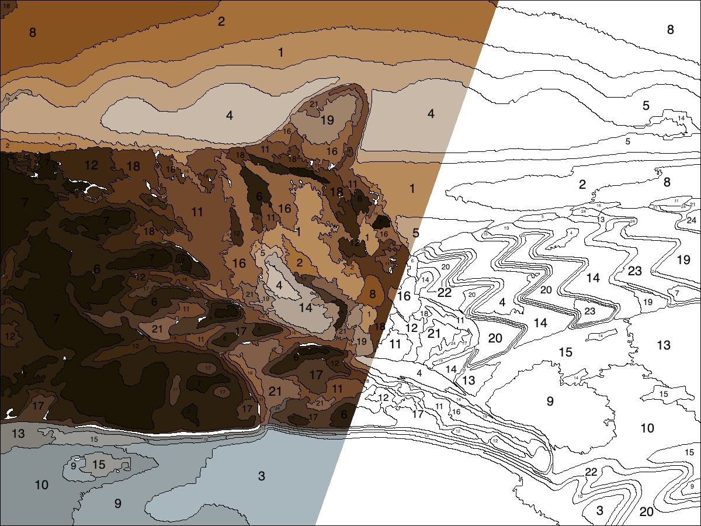
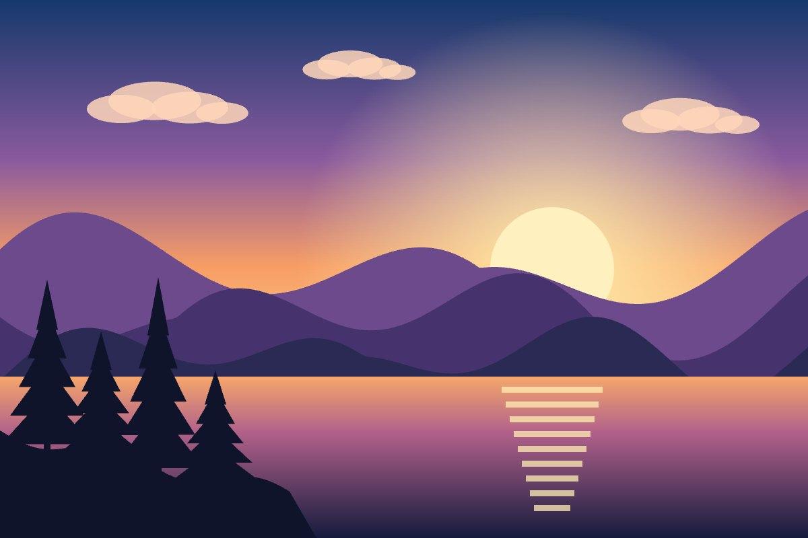
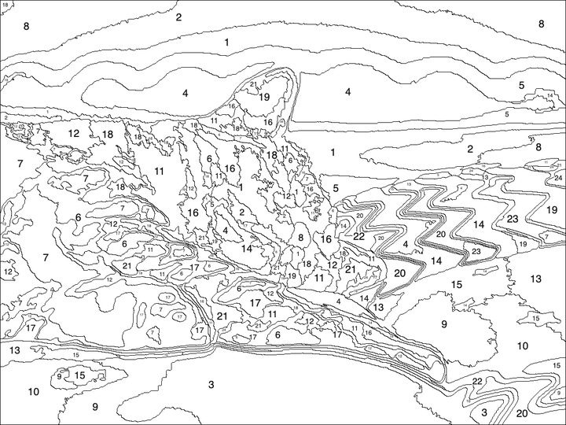
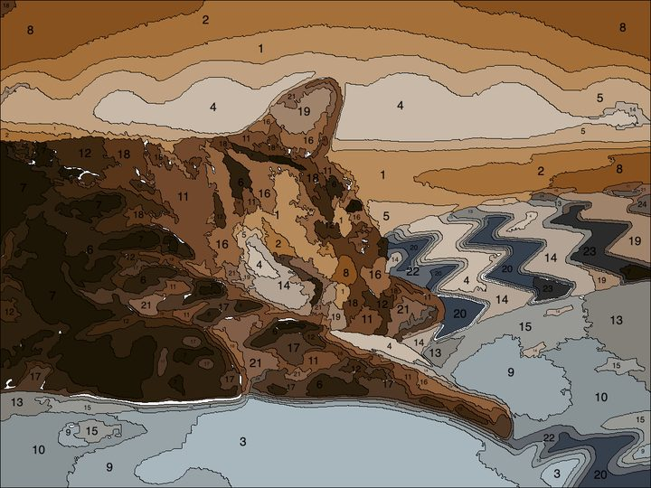
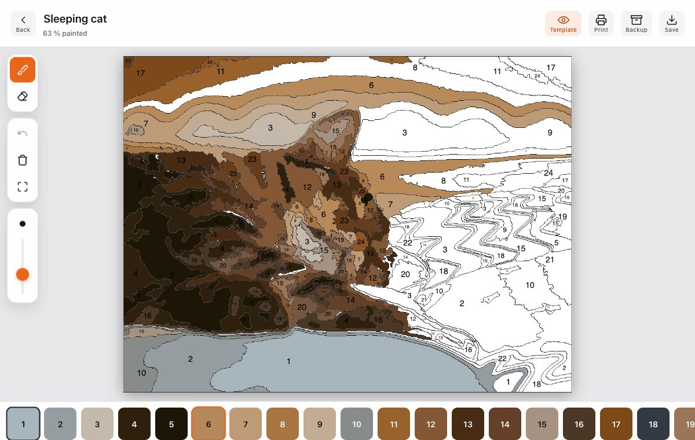
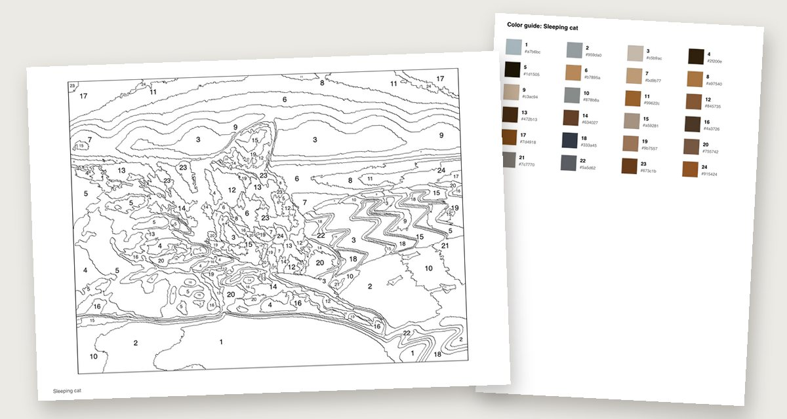

Easy for kids, detailed for you
Five levels from “Kids” (8 colors, big shapes) to “Fine” (50 colors). Same photo, very different template. Try a level, go back, try another.

Paint by NumbersPick a photo, choose the detail level, then paint it on screen with Apple Pencil or print it as a PDF.





Five levels from “Kids” (8 colors, big shapes) to “Fine” (50 colors). Same photo, very different template. Try a level, go back, try another.

Pick a numbered color and paint with finger, mouse or Apple Pencil. Pressure-sensitive, with palm rejection, zoom, eraser and 30 undo steps. Every stroke is saved automatically.
One tap exports an A4 PDF: the numbered template on page one, the color guide with every swatch and hex code on page two. Or send it straight to your printer.

The template is computed in your browser in a few seconds. Your photo never leaves this device. No upload, no account.
Save a project as a backup file and import it on another device to continue painting.
Add it to your home screen from the share menu. It then opens full screen and works without internet.
JPEG and PNG from any device. A clear subject with few busy areas gives fields that are easier to paint; the app scales large photos down by itself.
The number of colors: Kids 8, Easy 16, Standard 24, Detailed 36, Fine 50. Fewer colors mean bigger fields and a quicker painting; more colors stay closer to the photo.
No. The brush paints wherever you put it, like real paint. The number in each field tells you which color belongs there, and picking a color briefly flashes all of its fields.
Pinch with two fingers, or hold Ctrl and scroll with a mouse. The frame button fits the picture to the screen again. Undo keeps the last 30 strokes; Clear needs a second tap within three seconds and can be undone.
Yes. Pressure changes the stroke width, and touches from your resting hand are ignored while the pencil is drawing. Finger and mouse work the same way without pressure.
Every stroke is saved on this device automatically and the project appears under “Your projects”. Backup writes a .pbn.json file you can import on another device to continue there.
Print opens two options: “Print now” sends the numbered template to your printer, “Save as PDF” makes an A4 PDF with the template on page one and the color guide with every swatch and hex code on page two.
Yes. Once opened, it keeps working without internet. On iPhone and iPad choose “Add to Home Screen” from the share menu, on Android or desktop use the browser’s install option. Nothing is uploaded; the only request to another server is the anonymous like counter.
If this tool made you smile, leave a like or buy me a coffee. It keeps the project alive.
Your photos and paintings stay on this device. The only request this page sends to another server is the anonymous like counter.
Open source (MIT) · GitHub